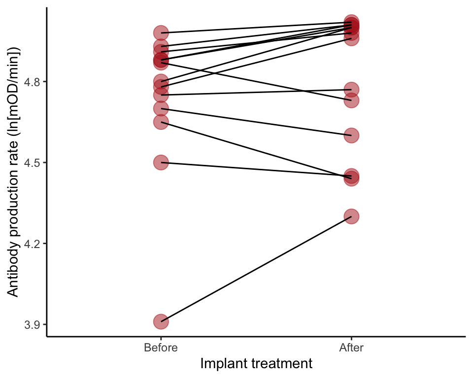
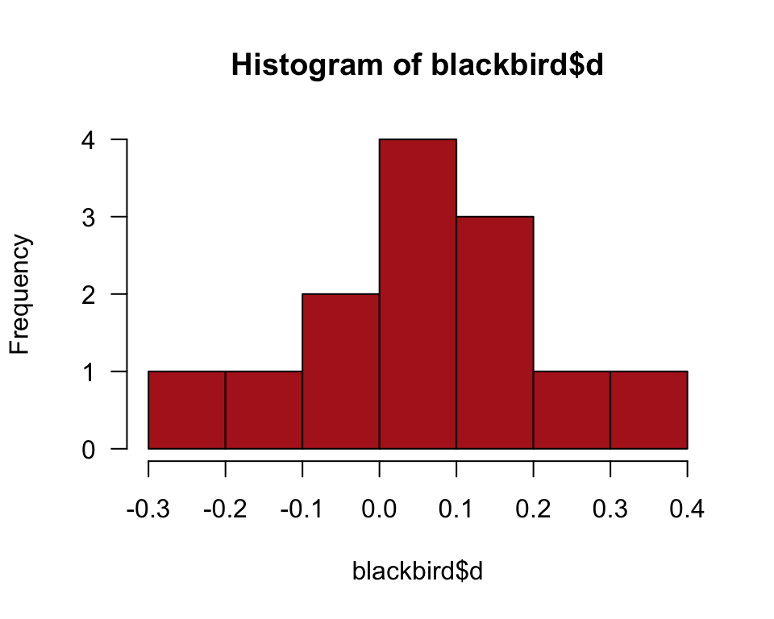
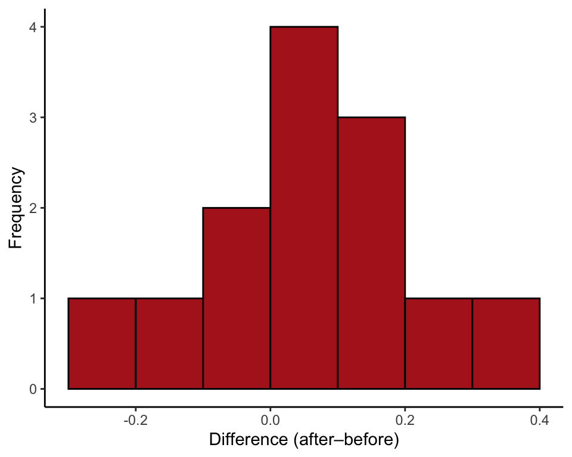
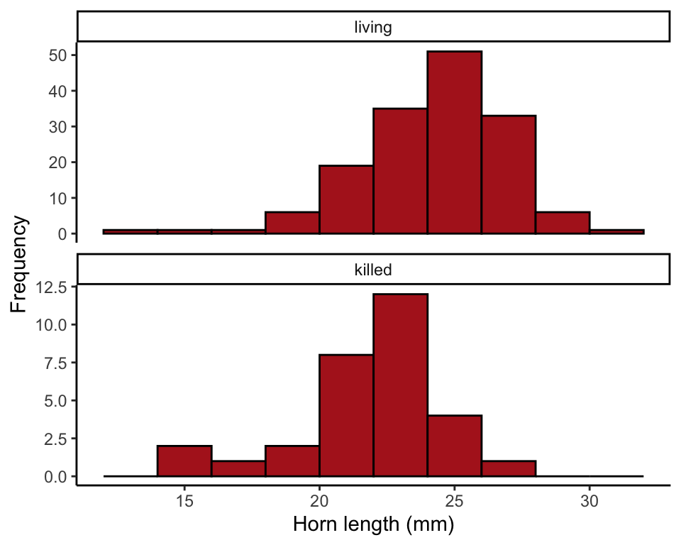
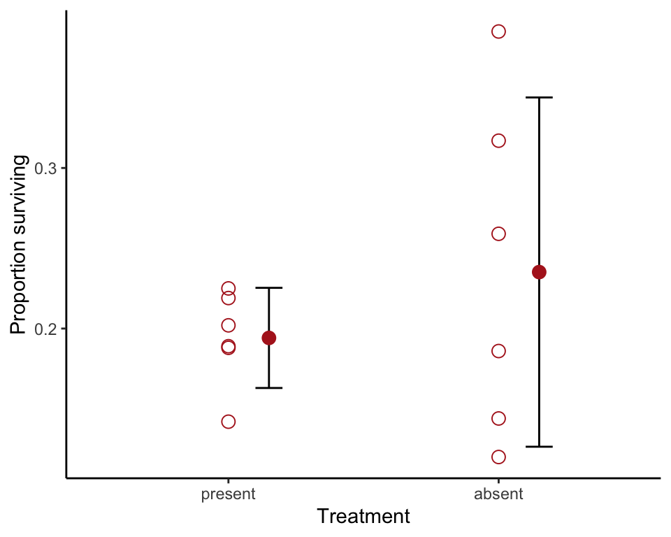

R code for example in Chapter 12:
Comparing two means
We used R to analyze all examples in Chapter 12. We put the code here so that you can too.
Also see our lab on comparing two means using R.
New methods on this page
-
Paired t-test and 95% confidence interval of a mean difference:
t.test(blackbird$logAfterImplant, blackbird$logBeforeImplant, paired = TRUE) -
Two-sample t-test and 95% confidence interval for a difference between two means:
t.test(squamosalHornLength ~ Survival, data = lizard, var.equal = TRUE) -
Other new methods:
-
A multiple histogram plot with
ggplot(). - The F test to compare two variances.
- The 95% confidence interval for the variance ratio.
- Levene’s test to compare variances between two (or more) groups.
- Convert data in “wide” format to “long” format.
-
A multiple histogram plot with
Load required packages
We’ll use the ggplot2 add on package to make graphs, and dplyr to calculate summary statistics by group. The car package is needed only for the optional Levene’s test. You may need to install it first onto you computer if you have not already done so.
install.packages("car", dependencies = TRUE) # install only if necessarylibrary(ggplot2)
library(dplyr)
library(car)Example 12.2. Red-winged blackbirds
Confidence interval for mean difference* and the paired t-test, comparing immunocompetence of red-winged blackbirds before and after testosterone implants.*
Read and inspect data
The data are in “wide” format (one row per individual, with the response variable at two time points in separate columns).
blackbird <- read.csv(url("https://whitlockschluter3e.zoology.ubc.ca/Data/chapter12/chap12e2BlackbirdTestosterone.csv"), stringsAsFactors = FALSE)
blackbird## blackbird beforeImplant afterImplant logBeforeImplant logAfterImplant
## 1 1 105 85 4.65 4.44
## 2 2 50 74 3.91 4.30
## 3 3 136 145 4.91 4.98
## 4 4 90 86 4.50 4.45
## 5 5 122 148 4.80 5.00
## 6 6 132 148 4.88 5.00
## 7 7 131 150 4.88 5.01
## 8 8 119 142 4.78 4.96
## 9 9 145 151 4.98 5.02
## 10 10 130 113 4.87 4.73
## 11 11 116 118 4.75 4.77
## 12 12 110 99 4.70 4.60
## 13 13 138 150 4.93 5.01Plot paired data
A strip chart for paired data, with lines connecting dots for the same individual (Figure 12.2-1). We first need to put the log-transformed data into “long” format, with the before and after measurements in the same column of data, and a new variable to indicate the Before and After data.
We did this by making a separate data frame for Before and After treatments (they must having identical variable names) and then rbind() them. We then ordered the categories of the treatment variable so that Before data comes first in the plot.
beforeData <- data.frame(blackbird = blackbird$blackbird,
logAntibody = blackbird$logBeforeImplant,
time = "Before")
afterData <- data.frame(blackbird = blackbird$blackbird,
logAntibody = blackbird$logAfterImplant,
time = "After")
blackbird2 <- rbind(beforeData, afterData)
blackbird2$time <- factor(blackbird2$time, levels = c("Before", "After"))A ggplot() command for a paired data plot. The argument alpha = plots transparent dots, which helps to distinguish visually any overlapping measurements.
ggplot(blackbird2, aes(x = time, y = logAntibody)) +
geom_point(size = 5, col = "firebrick", alpha = 0.5) +
geom_line(aes(group = blackbird)) +
labs(x = "Implant treatment", y = "Antibody production rate (ln[mOD/min])") +
theme_classic()
Paired differences
We make a new variable d with the After minus Before differences.
blackbird$d <- blackbird$logAfterImplant - blackbird$logBeforeImplant
head(blackbird)## blackbird beforeImplant afterImplant logBeforeImplant logAfterImplant
## 1 1 105 85 4.65 4.44
## 2 2 50 74 3.91 4.30
## 3 3 136 145 4.91 4.98
## 4 4 90 86 4.50 4.45
## 5 5 122 148 4.80 5.00
## 6 6 132 148 4.88 5.00
## d
## 1 -0.21
## 2 0.39
## 3 0.07
## 4 -0.05
## 5 0.20
## 6 0.12Histogram of differences
The commands below generate Figure 12.2-2.
hist(blackbird$d, right = FALSE, col = "firebrick", las = 1)
or
ggplot(blackbird, aes(x = d)) +
geom_histogram(fill = "firebrick", col = "black", binwidth = 0.1,
boundary = 0, closed = "left") +
labs(x = "Difference (after–before)", y = "Frequency") +
theme_classic()
95% CI for mean difference
95% confidence intervals are part of the output of the t.test() function, viewed in isolation by adding $conf.int to the command.
t.test(blackbird$d)$conf.int## [1] -0.04007695 0.15238464
## attr(,"conf.level")
## [1] 0.95Or, we can use the paired = TRUE argument of t.test() and specifying the pair of variables.
t.test(blackbird$logAfterImplant, blackbird$logBeforeImplant, paired = TRUE)$conf.int## [1] -0.04007695 0.15238464
## attr(,"conf.level")
## [1] 0.95Paired t-test
A paired t-test can be done either on differences you have already calculated (d here) or by using the paired = TRUE argument with the measurements from the two groups.
t.test(blackbird$d)##
## One Sample t-test
##
## data: blackbird$d
## t = 1.2714, df = 12, p-value = 0.2277
## alternative hypothesis: true mean is not equal to 0
## 95 percent confidence interval:
## -0.04007695 0.15238464
## sample estimates:
## mean of x
## 0.05615385or
t.test(blackbird$logAfterImplant, blackbird$logBeforeImplant, paired = TRUE)##
## Paired t-test
##
## data: blackbird$logAfterImplant and blackbird$logBeforeImplant
## t = 1.2714, df = 12, p-value = 0.2277
## alternative hypothesis: true difference in means is not equal to 0
## 95 percent confidence interval:
## -0.04007695 0.15238464
## sample estimates:
## mean of the differences
## 0.05615385Example 12.3. Horned lizards
Confidence interval for the difference between two means, and the two-sample t-test, comparing horn length of live and dead (spiked) horned lizards.
Read and inspect data
lizard <- read.csv(url("https://whitlockschluter3e.zoology.ubc.ca/Data/chapter12/chap12e3HornedLizards.csv"), stringsAsFactors = FALSE)
head(lizard)## squamosalHornLength Survival
## 1 25.2 living
## 2 26.9 living
## 3 26.6 living
## 4 25.6 living
## 5 25.7 living
## 6 25.9 livingNote that there is one missing value for the variable “squamosalHornLength”.
Multiple histograms
We begin by ordering the categories of the survival variable so that “living” comes before “killed” in the histogram. The plot command will deliver a warning to let you know that one case was dropped (the one lizard missing a horn length measurement).
lizard$Survival <- factor(lizard$Survival, levels = c("living", "killed"))
ggplot(lizard, aes(x = squamosalHornLength)) +
geom_histogram(fill = "firebrick", col = "black", binwidth = 2,
boundary = 0, closed = "left") +
facet_wrap( ~ Survival, ncol = 1, scales = "free_y") +
labs(x = "Horn length (mm)", y = "Frequency") +
theme_classic()## Warning: Removed 1 rows containing non-finite values (stat_bin).
95% CI for difference between means
The 95% confidence interval for the difference between two means is part of the output of t.test(). Append $confint after calling the function to get R to report only the confidence interval.
The formula in the following command tells R to compare squamosalHornLength between the two groups indicated by Survival. When using the formula method, the data frame containing the variables must be indicated by data = ````. Thevar.equal =argument indicates that we assume the variances of the two groups to be equal (the default isFALSE```).
t.test(squamosalHornLength ~ Survival, data = lizard, var.equal = TRUE)$conf.int## [1] 1.253602 3.335402
## attr(,"conf.level")
## [1] 0.95Two-sample t-test
A test of the difference between the two means can be carried out with t.test(). The formula in the following command tells R to compare squamosalHornLength between the two groups indicated by Survival. When using the formula method, the data frame containing the variables must be indicated by data = ````. Thevar.equal =argument indicates that we assume the variances of the two groups to be equal (the default isFALSE```).
t.test(squamosalHornLength ~ Survival, data = lizard, var.equal = TRUE)##
## Two Sample t-test
##
## data: squamosalHornLength by Survival
## t = 4.3494, df = 182, p-value = 2.27e-05
## alternative hypothesis: true difference in means is not equal to 0
## 95 percent confidence interval:
## 1.253602 3.335402
## sample estimates:
## mean in group living mean in group killed
## 24.28117 21.98667Example 12.4. Salmon survival
Welch’s two-sample t-test for unequal variances, comparing chinook salmon survival in the presents and absence of brook trout. This same example to demonstrate the 95% confidence interval for the ratio of two variances, and the F-test of equal variances.*
Read and inspect data
chinook <- read.csv(url("https://whitlockschluter3e.zoology.ubc.ca/Data/chapter12/chap12e4ChinookWithBrookTrout.csv"), stringsAsFactors = FALSE)
head(chinook)## troutTreatment nReleased nSurvivors proportionSurvived
## 1 present 820 166 0.202
## 2 absent 467 180 0.385
## 3 present 960 136 0.142
## 4 present 700 153 0.219
## 5 absent 959 178 0.186
## 6 present 545 103 0.189Order categories
Set the preferred order of categories in tables and graphs
chinook$troutTreatment <- factor(chinook$troutTreatment,
levels = c("present", "absent"))Strip chart with error bars
Use stat_summary() to overlay mean and 95% confidence intervals. We shifted the position of the bars using position_nudge() to eliminate overlap.
fun.data=mean_cl_normal, width=0.1, conf.int=0.95
ggplot(chinook, aes(x = troutTreatment, y = proportionSurvived)) +
geom_point(color = "firebrick", size = 3, shape = 1) +
stat_summary(fun.data = mean_cl_normal, geom = "errorbar",
width = 0.1, position=position_nudge(x = 0.15)) +
stat_summary(fun.y = mean, geom = "point", color = "firebrick",
size = 3, position=position_nudge(x = 0.15)) +
labs(x = "Treatment", y = "Proportion surviving") +
theme_classic()
Statistics by group
The summarize() command from the dplyr package will generate the summary statistics in Table 12.4-3.
chinookStats <- summarize(group_by(chinook, troutTreatment),
Sample_mean = mean(proportionSurvived, na.rm = TRUE),
Sample_standard_deviation = sd(proportionSurvived, na.rm = TRUE),
n = n())
as.data.frame(chinookStats)## troutTreatment Sample_mean Sample_standard_deviation n
## 1 present 0.1941667 0.02971476 6
## 2 absent 0.2351667 0.10364056 6Welch’s two-sample t-test
Use var.equal = FALSE argument of the t.test() function for a test of the difference between two means when variances are unequal.
t.test(proportionSurvived ~ troutTreatment, data = chinook, var.equal = FALSE)##
## Welch Two Sample t-test
##
## data: proportionSurvived by troutTreatment
## t = -0.93148, df = 5.8165, p-value = 0.3886
## alternative hypothesis: true difference in means is not equal to 0
## 95 percent confidence interval:
## -0.14953173 0.06753173
## sample estimates:
## mean in group present mean in group absent
## 0.1941667 0.2351667Comparing variances
Here, we demonstrate the 95% confidence interval for the ratio of two variances, and **F*-test of equal variances,** using the chinook salmon experiment.*
95% CI for variance ratio
Warning: remember that this method is not robust to departures from assumption of normality.
var.test(proportionSurvived ~ troutTreatment, data = chinook)$conf.int## [1] 0.01150267 0.58745010
## attr(,"conf.level")
## [1] 0.95F-test of equal variances
Warning: Remember that the F-test is not robust to departures from assumption of normality.
R doesn’t put the larger variance on top, as in our Quick Formula Summary, but the result is the same.
var.test(proportionSurvived ~ troutTreatment, data = chinook)##
## F test to compare two variances
##
## data: proportionSurvived by troutTreatment
## F = 0.082202, num df = 5, denom df = 5, p-value = 0.01589
## alternative hypothesis: true ratio of variances is not equal to 1
## 95 percent confidence interval:
## 0.01150267 0.58745010
## sample estimates:
## ratio of variances
## 0.08220245Levene’s test
This test of equal variances is more robust than the F test. The leveneTest() function is in the car package.
leveneTest(chinook$proportionSurvived, group = chinook$troutTreatment,
center = mean)## Levene's Test for Homogeneity of Variance (center = mean)
## Df F value Pr(>F)
## group 1 10.315 0.009306 **
## 10
## ---
## Signif. codes: 0 '***' 0.001 '**' 0.01 '*' 0.05 '.' 0.1 ' ' 1